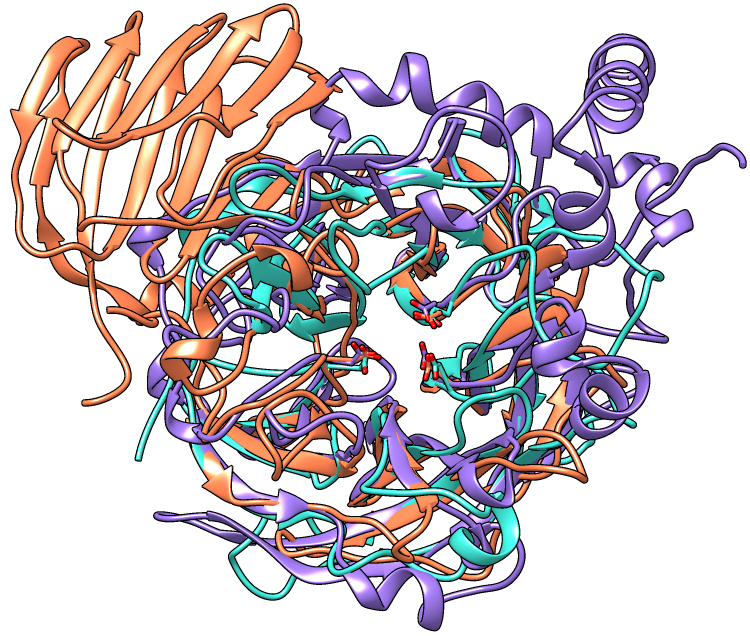
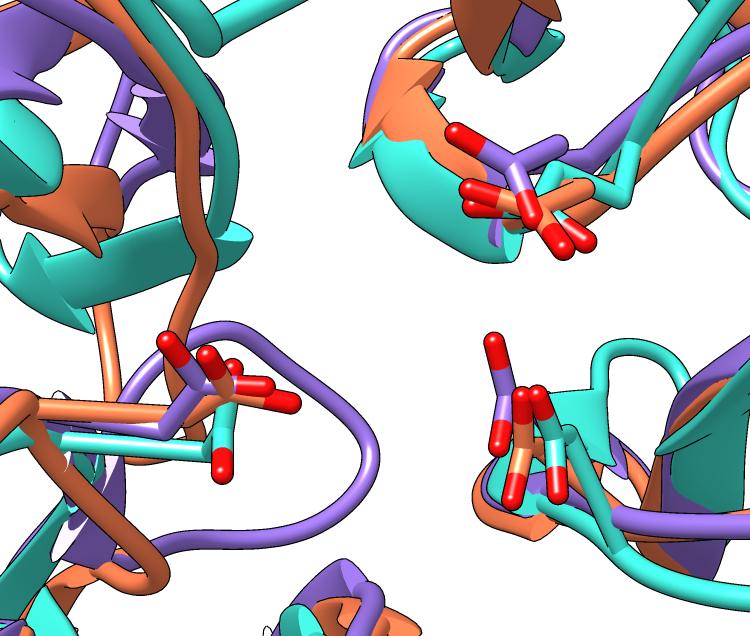

This tutorial describes superimposing structures, saving positions and sessions, and creating publication-quality images. The process described here is only one of many possibilities. Internet connectivity is required to fetch the structures 1uyp, 1gyd, and 1oyg.
See also: presets, tips on preparing images, and on the Chimera website, the Image Gallery
|  |
|  |
| Invertase (GH 32) is coral, arabinanase A (GH 43) is turquoise, and levansucrase (GH 68) is purple. Despite significant divergence, the enzymes share similar overall folds (top) and highly conserved active site residues (bottom). |
Glycoside hydrolases (GH) are a large, heterogeneous set of enzymes that hydrolyze bonds between sugars and other groups. Based on sequence comparisons, these enzymes have been categorized into many families; see the CAZy website for details.
This tutorial describes the creation of images to show
structural similarities among members of GH families 32, 43, and 68.
These enzymes were grouped into different families because their
similarities were not evident from sequence comparisons.
Three acidic residues are at the active site of a beta-propeller architecture
in glycoside hydrolase families 32, 43, 62, and 68.
Pons T, Naumoff DG, Martínez-Fleites C, Hernández L.
Proteins. 2004 Feb 15;54(3):424-32.
The three-dimensional structure of invertase (beta-fructosidase)
from Thermotoga maritima reveals a bimodular arrangement and an
evolutionary relationship between retaining and inverting glycosidases.
Alberto F, Bignon C, Sulzenbacher G, Henrissat B, Czjzek M.
J Biol Chem. 2004 Apr 30;279(18):18903-10.
Start Chimera and enlarge the window as desired. Show the Command Line (for example, with Favorites... Command Line).
Structures can be obtained directly from the Protein Data Bank. Choose File... Fetch by ID from the Chimera menu. In the resulting dialog, choose the PDB database and check the option to Keep dialog up after Fetch. Fetch the PDB structures 1uyp, 1gyd, and 1oyg, in that order, and then Close the dialog.
Some salient features of these structures:
| PDB ID | enzyme | family | chains | conserved residues | model # in Chimera | ||
|---|---|---|---|---|---|---|---|
| 1uyp | invertase, T. maritima |
GH32 | A-F | Asp17 | Asp138 | Glu190 | 0 |
| 1gyd | arabinanase A, C. japonicus |
GH43 | B | Asp38 | Asp158 | Glu221 | 1 |
| 1oyg | levansucrase, B. subtilis |
GH68 | A | Asp86 | Asp247 | Glu342 | 2 |
Simplify the situation by deleting unwanted (for our purposes) extra chains:
Command: delete #0:.b-fChoose Presets... Interactive 1 (ribbons) from the menu; depending on your settings, this may not change anything in the display. Move and scale the structures as desired throughout the tutorial.
Alias the conserved residues to some short name for convenience. To avoid typing long commands, you can copy text from this page and paste it into the Command Line:
Command: alias myres #0:17,138,190#1:38,158,221#2:86,247,342Show only the atoms/bonds of these residues:
Command: ~displayEven though all atoms of the residues are “displayed,” backbone atom display is suppressed by the ribbon (display of both at the same time can be enabled with ribbackbone).
Command: display myres
Initially, the relative positions of the structures are not meaningful and merely reflect their coordinates as deposited in the Protein Data Bank. Chimera includes a few different ways of superimposing structures.
First, try MatchMaker (under Tools... Structure Comparison in the menu). In the resulting dialog, choose 1uyp as the reference and the other two (or all three) as the structures to match. Leave the other settings as defaults and click OK. This uses the protein sequences and secondary structure assignments to generate pairwise sequence alignments, then fits the α-carbons of the aligned pairs of residues. The numbers of points used for fitting and the resulting RMSD values are reported in the Reply Log (under Favorites in the menu). When the structures have been superimposed, focus the view:
Command: focusManually zoom and reorient to see how well the conserved residues are superimposed. Save the position to facilitate comparison with the results of a different matching method, used below. A position includes the scale, locations, and orientations of the structures.
Command: savepos pos1Since structurally equivalent residues are known, another way to superimpose the structures is by specifying atoms to use in a least-squares fit. The match command requires equal numbers of atoms from the two models being matched. The following specifies using the backbone atoms of the conserved residues:
Command: match #1:38,158,221@n,ca,c,o #0:17,138,190@n,ca,c,oAgain, 1uyp (model 0, invertase) was used as the reference structure for both pairwise matches, and RMSD values are given in the Reply Log. Chain identifiers were not needed in the commands since each model has only one chain (chains B-F were deleted from model 0).
Command: match #2:86,247,342@n,ca,c,o #0:17,138,190@n,ca,c,o
Command: savepos pos2
Review the two superpositions to decide which is better:
Command: reset pos1 30Repeat as desired. The number at the end of the reset command is the number of frames over which to gradually restore the position. A gradual rather than abrupt transition between positions may make them easier to compare.
Command: reset pos2 30
In this case, the light blue structure (model 1, arabinanase) is better superimposed with the others in the result from MatchMaker (position pos1).
You may have noticed that some of the bonds from sidechains to the ribbon look very long. This is because the ribbon path (by default) is a smooth B-spline, which can diverge from the true positions of the backbone atoms. A cardinal spline allows tracking the backbone more closely. Without smoothing, a cardinal spline follows the α-carbons exactly, or it can be combined with some “compromise” smoothing of strand and/or coil:
Command: ribspline cardinalRibbon styles include edged and rounded; different styles can be used for different parts of the same ribbon, as in the first example below:
Command: ribsp card smooth strand
Command: ribsp default
Command: ribrep edged strandRibbon scalings are secondary-structure-specific heights and widths. Try the “licorice” scaling and then go back to the default.
Command: ribrep edged
Command: ribrep rounded
Command: ribscale licoriceCustom ribbon styles and scalings can be created with the Ribbon Style Editor (Tools... Depiction... Ribbon Style Editor).
Command: ribscale "Chimera default"
Although the examples show ribbons for the entire chains, each residue's ribbon segment can be shown or hidden. For example, the following hides ribbons for the C-terminal domain of the first structure (model 0):
Command: ~ribbon #0:296-endA command without residues specified affects all residues:
Command: ribbon
Resize the Chimera window to the desired aspect ratio and find positions suitable for the images.
A window size of 750x636 pixels and two positions were used for the example images. A view of the overall structures was generated by interactive manipulation, then saved (with savepos) as a position named overall. Another position zoomed into the active site was generated from overall by scaling and translation only (to maintain a consistent view) and saved as as the position closeup.
Saved positions are included in saved sessions and can be restored before saving images.
The current model colors could be used, but typically users will want to apply their own scheme. Several factors should be considered in choosing colors, including what the colors are meant to indicate, their distinguishability, and whether viewers may have color vision deficiencies. The colors named coral, turquoise, and medium purple were used for models 0, 1, and 2, respectively, in the example images.
Open the Color Actions dialog (Actions... Color... all options) and near the bottom, check Show all colors to expand it. Select a model:
Command: sel #0and click the desired color in the dialog. Repeat for models 1 and 2, then close the coloring dialog. Clear the selection:
Command: ~selTo use heteroatom color-coding so that sidechain oxygens are red:
Command: color byhet
The background can be any color, but white is often best for publication images.
Command: background solid whiteDepth cueing is front-to-back shading of the scene, which looks like “fog” when the depth cueing color is pale. By default, the depth cueing color automatically matches the background. Turn off depth cueing to remove the fog effect:
Command: ~set depthCueRibbons, sticks, and other spacefilling display styles are made up of planar facets. The coarseness of the facets is controlled by the subdivision parameter, which ranges from 1 to 20 (default 1.5). Increase smoothness by increasing the subdivision:
Command: set subdivision 5Silhouettes are outlines that highlight boundaries and discontinuities. Turn on silhouettes:
Command: set silhouetteThe silhouettes look rough in the Chimera window, but they will be smooth in the saved images due to supersampling.
Instead of the four preceding commands, publication preset 1 could be used to achieve the same result (command preset apply pub 1 or menu item Presets... Publication 1). Silhouettes and increased subdivision may degrade interactive response; if so, adjust these settings last before saving sessions and images.
The contrast, or darkness of shading, is another important contributor to the clarity of figures. Decrease the contrast (default 0.83):
Command: light contrast 0.55Graphical interfaces to Effects and Lighting are available under Tools... Viewing Controls in the menu.
A session file can be saved with File... Save Session As in the Chimera menu. It is generally prudent to save sessions for publication images, as this decreases the labor necessary if the figures have to be redone. Often minor adjustments such as changing a color or displaying a different set of side chains will be required.
Later, the session can be restarted with File... Restore Session, and any saved positions within that session restored with the command reset.
Previously saved positions can be restored, for example:
Command: reset overallChoosing File... Save Image brings up the Save Image panel for specifying the output file location, name, and type (PNG was used for the examples), and other options.
Supersampling refers to generating an initial image larger than requested and then sampling it down to the final size. This smooths edges within the image with little effect on file size. The default Supersample setting of 3x3, used for the examples, is generally sufficient for publication.
The Image Size can be specified directly in pixels, or in units of length (when Use print units is on). If units of length, the output pixel dimensions are calculated using the specified Print resolution. The graphics window can be resized manually or with the command windowsize.
To make an image for a single-column width of 85 mm (3.346 in) with a resolution of at least 300 dpi, possible approaches include:
{kind=link}
{kind=link}